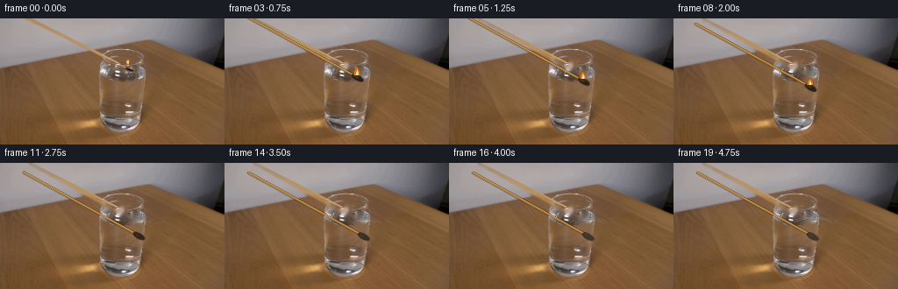
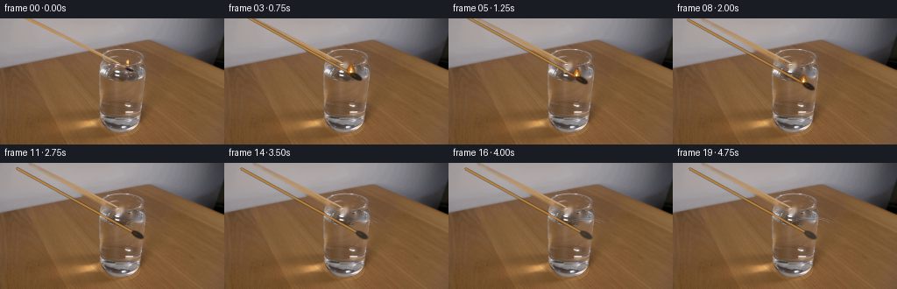
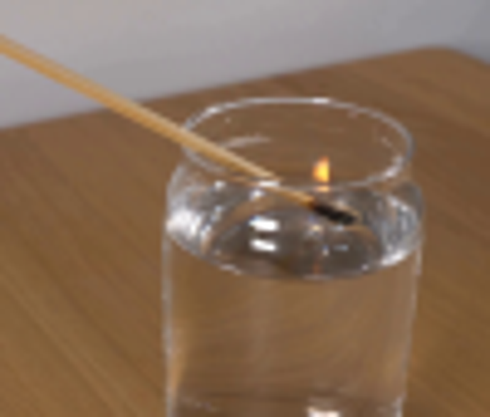
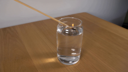
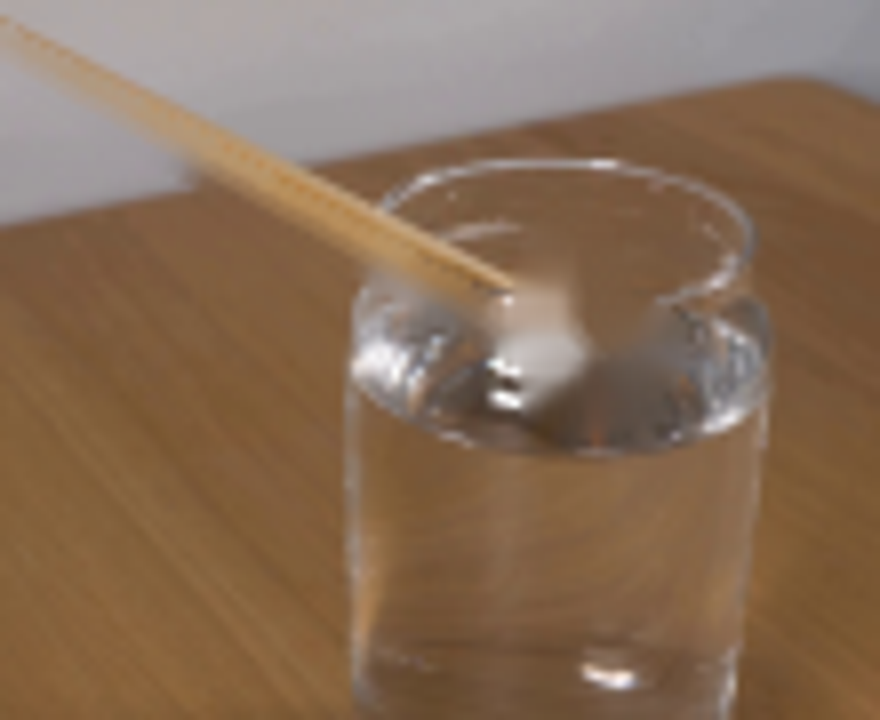
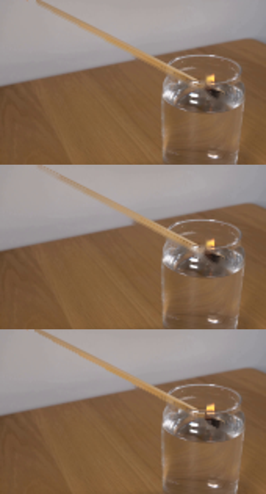
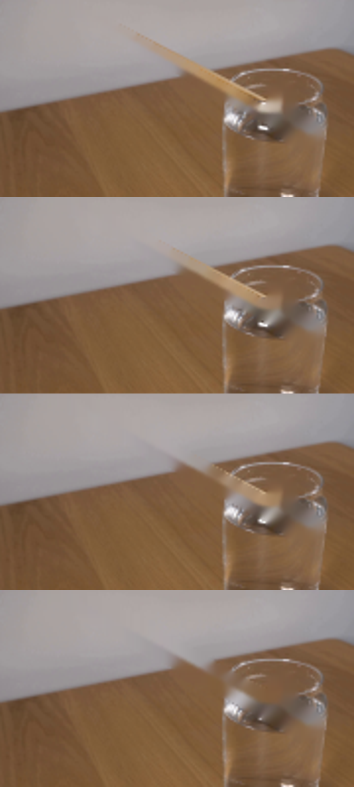
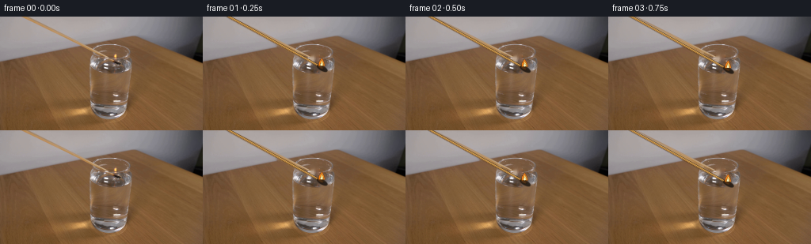
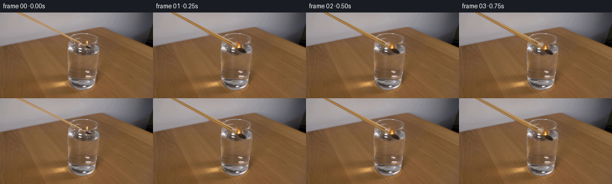

CODING AGENTS AS PIXEL WORLD MODELS
traex/GPT-5.6-Sol · 0109
点击播放 · 原生 RGB 像素
逐轮保存的候选
回放视频、检查图与代码变化。
每份候选均可单独播放。实际图片检查记录在下方工具轨迹中。
候选 01播放与检查图
点击播放 · 原生 RGB 像素

展开代码变化
--- 上一保存版本
+++ 本次保存版本
@@ -0,0 +1,142 @@
+from pathlib import Path
+import math
+import cv2
+import numpy as np
+from PIL import Image
+from artifact_io import save
+
+CASE = Path(__file__).resolve().parent
+SRC = np.asarray(Image.open(CASE / "first_frame.png").convert("RGB"), dtype=np.uint8)
+H, W = SRC.shape[:2]
+
+# The photograph itself is the plate. Only the tiny match/flame area is rebuilt;
+# this keeps the locked-off camera and all glass refraction perfectly stable.
+def clean_plate(src):
+ bgr = cv2.cvtColor(src, cv2.COLOR_RGB2BGR)
+ mask = np.zeros((H, W), np.uint8)
+ # Thin original stick, flame and head. A deliberately tight mask avoids altering the glass.
+ cv2.line(mask, (25, -2), (151, 66), 255, 3, cv2.LINE_AA)
+ cv2.ellipse(mask, (151, 65), (10, 6), 27, 0, 360, 255, -1, cv2.LINE_AA)
+ cv2.ellipse(mask, (141, 51), (5, 10), 0, 0, 360, 255, -1, cv2.LINE_AA)
+ mask = cv2.threshold(mask, 55, 255, cv2.THRESH_BINARY)[1]
+ repaired = cv2.inpaint(bgr, mask, 3, cv2.INPAINT_TELEA)
+ return cv2.cvtColor(repaired, cv2.COLOR_BGR2RGB)
+
+PLATE = clean_plate(SRC)
+
+# Soft polygon/ellipse compositing at 3x resolution makes the additions match the source softness.
+S = 3
+
+def over_rgba(rgb, layer):
+ a = layer[..., 3:4].astype(np.float32) / 255.0
+ return np.clip(rgb.astype(np.float32) * (1-a) + layer[..., :3].astype(np.float32) * a, 0, 255).astype(np.uint8)
+
+def ellipse_layer(cx, cy, rx, ry, color, blur=0, angle=0):
+ lay = np.zeros((H*S, W*S, 4), np.uint8)
+ cv2.ellipse(lay, (round(cx*S), round(cy*S)), (max(1,round(rx*S)), max(1,round(ry*S))),
+ angle, 0, 360, color, -1, cv2.LINE_AA)
+ if blur:
+ k = int(blur*S*4+1) | 1
+ lay = cv2.GaussianBlur(lay, (k,k), blur*S)
+ return cv2.resize(lay, (W,H), interpolation=cv2.INTER_AREA)
+
+def line_layer(a, b, width, color):
+ lay=np.zeros((H*S,W*S,4),np.uint8)
+ cv2.line(lay,(round(a[0]*S),round(a[1]*S)),(round(b[0]*S),round(b[1]*S)),color,
+ max(1,round(width*S)),cv2.LINE_AA)
+ return cv2.resize(lay,(W,H),interpolation=cv2.INTER_AREA)
+
+def poly_layer(points, color, blur=0):
+ lay=np.zeros((H*S,W*S,4),np.uint8)
+ pts=np.array([(round(x*S),round(y*S)) for x,y in points],np.int32)
+ cv2.fillPoly(lay,[pts],color,lineType=cv2.LINE_AA)
+ if blur:
+ k=int(blur*S*4+1)|1
+ lay=cv2.GaussianBlur(lay,(k,k),blur*S)
+ return cv2.resize(lay,(W,H),interpolation=cv2.INTER_AREA)
+
+def ease(t):
+ t=np.clip(t,0,1)
+ return t*t*(3-2*t)
+
+def make_frame(i):
+ if i == 0:
+ return SRC.copy()
+
+ # Continuous real-time lowering. The hand remains outside frame: both visible endpoints
+ # translate down/right, rather than rotating around an onscreen pivot.
+ p = ease(i / 12.0)
+ dx, dy = 8.0*p, 19.0*p
+ tip = np.array((151.5+dx, 65.0+dy))
+ direction = np.array((-0.876, -0.482))
+ tail = tip + direction*151.0
+ out = PLATE.copy()
+
+ # Restore a narrow halo of original photograph early so frame 1 does not visibly jump.
+ # The rebuilt match has warm edge, woody core and a fine highlight.
+ out=over_rgba(out,line_layer(tail,tip,3.0,(124,76,29,85)))
+ out=over_rgba(out,line_layer(tail+np.array((0,-.25)),tip+np.array((0,-.25)),2.05,(194,139,67,238)))
+ out=over_rgba(out,line_layer(tail+np.array((0,-.75)),tip+np.array((0,-.75)),.65,(240,191,102,145)))
+
+ # Blackened match head, elongated along the shaft direction.
+ head_center=tip+np.array((-1.0,-.15))
+ out=over_rgba(out,ellipse_layer(*head_center,7.2,3.0,(31,25,20,225),.35,29))
+ out=over_rgba(out,ellipse_layer(head_center[0]-2.0,head_center[1]-1.0,3.6,1.25,(78,49,25,150),.28,29))
+
+ # Water entry around frame 10: small realistic meniscus/ripples on the surface ellipse.
+ wet=max(0.0,min(1.0,(i-9)/4.0))
+ if wet>0:
+ phase=i-9
+ ripple=np.zeros((H*S,W*S,4),np.uint8)
+ for j in range(2):
+ rr=(4.0+phase*1.8+j*5.2)
+ alpha=int((1-wet*.32)*(72-j*22))
+ cv2.ellipse(ripple,(round(tip[0]*S),round((69.0+min(3,phase)*.35)*S)),
+ (round(rr*S),round(rr*.30*S)),0,192,346,(235,241,239,alpha),
+ max(1,round(.55*S)),cv2.LINE_AA)
+ ripple=cv2.resize(ripple,(W,H),interpolation=cv2.INTER_AREA)
+ out=over_rgba(out,ripple)
+
+ # Flame burns naturally until contact, compresses at the surface, then disappears.
+ if i <= 9:
+ life = 1.0 if i < 8 else (10-i)/2.0
+ flick = math.sin(i*2.37)*0.75 + math.sin(i*.81)*.35
+ fh=(10.0-2.0*p)*life
+ fw=(4.0-.5*p)*max(.45,life)
+ bx,by=tip[0]-1.7,tip[1]-3.0
+ if life>0.05:
+ # broad warm glow
+ out=over_rgba(out,ellipse_layer(bx,by-fh*.43,fw*1.65,fh*.78,(255,126,20,int(48*life)),2.3))
+ flame=[(bx-fw,by),(bx-fw*.82,by-fh*.47),(bx+flick*.30,by-fh),
+ (bx+fw*.77,by-fh*.43),(bx+fw,by)]
+ out=over_rgba(out,poly_layer(flame,(255,133,24,int(245*life)),.35))
+ inner=[(bx-fw*.52,by-.4),(bx-fw*.28,by-fh*.38),(bx+.15*flick,by-fh*.73),
+ (bx+fw*.48,by-fh*.32),(bx+fw*.52,by-.4)]
+ out=over_rgba(out,poly_layer(inner,(255,230,126,int(245*life)),.20))
+ out=over_rgba(out,ellipse_layer(bx-.2,by-1.7,fw*.34,max(.6,fh*.18),(251,250,210,int(220*life)),.2))
+
+ # Brief steam/smoke curl after extinguishing, drifting upward and left and fading.
+ if i >= 10:
+ age=i-10
+ strength=max(0.0,1-age/9.5)
+ smoke=np.zeros((H*S,W*S,4),np.uint8)
+ pts=[]
+ for q in np.linspace(0,1,22):
+ x=tip[0]-1.2-age*.28 + math.sin(q*5.4+age*.45)*1.55*q
+ y=tip[1]-3.0-q*(8.0+age*.70)
+ pts.append((round(x*S),round(y*S)))
+ cv2.polylines(smoke,[np.array(pts,np.int32)],False,(198,195,186,int(72*strength)),
+ max(1,round(1.0*S)),cv2.LINE_AA)
+ smoke=cv2.GaussianBlur(smoke,(9,9),1.15*S)
+ smoke=cv2.resize(smoke,(W,H),interpolation=cv2.INTER_AREA)
+ out=over_rgba(out,smoke)
+
+ # Water slightly veils the submerged head in late frames.
+ if i>=11:
+ a=int(min(60,(i-10)*10))
+ out=over_rgba(out,ellipse_layer(tip[0],tip[1],7.8,3.2,(120,122,116,a),.55,29))
+ return out
+
+frames=np.stack([make_frame(i) for i in range(20)]).astype(np.uint8)
+assert np.array_equal(frames[0], SRC)
+save(frames, CASE)
候选 02播放与检查图
点击播放 · 原生 RGB 像素

展开代码变化
--- 上一保存版本
+++ 本次保存版本
@@ -40,10 +40,13 @@
lay = cv2.GaussianBlur(lay, (k,k), blur*S)
return cv2.resize(lay, (W,H), interpolation=cv2.INTER_AREA)
-def line_layer(a, b, width, color):
+def line_layer(a, b, width, color, blur=0):
lay=np.zeros((H*S,W*S,4),np.uint8)
cv2.line(lay,(round(a[0]*S),round(a[1]*S)),(round(b[0]*S),round(b[1]*S)),color,
max(1,round(width*S)),cv2.LINE_AA)
+ if blur:
+ k=int(blur*S*4+1)|1
+ lay=cv2.GaussianBlur(lay,(k,k),blur*S)
return cv2.resize(lay,(W,H),interpolation=cv2.INTER_AREA)
def poly_layer(points, color, blur=0):
@@ -67,21 +70,22 @@
# translate down/right, rather than rotating around an onscreen pivot.
p = ease(i / 12.0)
dx, dy = 8.0*p, 19.0*p
- tip = np.array((151.5+dx, 65.0+dy))
+ # "root" is where the bare wood meets the compound head in the source.
+ root = np.array((144.0+dx, 60.5+dy))
direction = np.array((-0.876, -0.482))
- tail = tip + direction*151.0
+ tail = root + direction*151.0
out = PLATE.copy()
# Restore a narrow halo of original photograph early so frame 1 does not visibly jump.
# The rebuilt match has warm edge, woody core and a fine highlight.
- out=over_rgba(out,line_layer(tail,tip,3.0,(124,76,29,85)))
- out=over_rgba(out,line_layer(tail+np.array((0,-.25)),tip+np.array((0,-.25)),2.05,(194,139,67,238)))
- out=over_rgba(out,line_layer(tail+np.array((0,-.75)),tip+np.array((0,-.75)),.65,(240,191,102,145)))
+ out=over_rgba(out,line_layer(tail,root,2.55,(169,108,43,105),.30))
+ out=over_rgba(out,line_layer(tail+np.array((0,-.15)),root+np.array((0,-.15)),1.55,(194,139,67,238),.22))
+ out=over_rgba(out,line_layer(tail+np.array((0,-.55)),root+np.array((0,-.55)),.42,(244,197,112,105),.18))
# Blackened match head, elongated along the shaft direction.
- head_center=tip+np.array((-1.0,-.15))
- out=over_rgba(out,ellipse_layer(*head_center,7.2,3.0,(31,25,20,225),.35,29))
- out=over_rgba(out,ellipse_layer(head_center[0]-2.0,head_center[1]-1.0,3.6,1.25,(78,49,25,150),.28,29))
+ head_center=root+np.array((5.0,2.8))
+ out=over_rgba(out,ellipse_layer(*head_center,7.4,3.05,(29,25,21,225),.55,29))
+ out=over_rgba(out,ellipse_layer(head_center[0]-2.2,head_center[1]-1.25,3.7,1.20,(87,53,25,142),.38,29))
# Water entry around frame 10: small realistic meniscus/ripples on the surface ellipse.
wet=max(0.0,min(1.0,(i-9)/4.0))
@@ -91,7 +95,7 @@
for j in range(2):
rr=(4.0+phase*1.8+j*5.2)
alpha=int((1-wet*.32)*(72-j*22))
- cv2.ellipse(ripple,(round(tip[0]*S),round((69.0+min(3,phase)*.35)*S)),
+ cv2.ellipse(ripple,(round(head_center[0]*S),round((69.0+min(3,phase)*.35)*S)),
(round(rr*S),round(rr*.30*S)),0,192,346,(235,241,239,alpha),
max(1,round(.55*S)),cv2.LINE_AA)
ripple=cv2.resize(ripple,(W,H),interpolation=cv2.INTER_AREA)
@@ -103,16 +107,16 @@
flick = math.sin(i*2.37)*0.75 + math.sin(i*.81)*.35
fh=(10.0-2.0*p)*life
fw=(4.0-.5*p)*max(.45,life)
- bx,by=tip[0]-1.7,tip[1]-3.0
+ bx,by=root[0]-.7,root[1]-1.25
if life>0.05:
# broad warm glow
out=over_rgba(out,ellipse_layer(bx,by-fh*.43,fw*1.65,fh*.78,(255,126,20,int(48*life)),2.3))
flame=[(bx-fw,by),(bx-fw*.82,by-fh*.47),(bx+flick*.30,by-fh),
(bx+fw*.77,by-fh*.43),(bx+fw,by)]
- out=over_rgba(out,poly_layer(flame,(255,133,24,int(245*life)),.35))
+ out=over_rgba(out,poly_layer(flame,(255,133,24,int(235*life)),.62))
inner=[(bx-fw*.52,by-.4),(bx-fw*.28,by-fh*.38),(bx+.15*flick,by-fh*.73),
(bx+fw*.48,by-fh*.32),(bx+fw*.52,by-.4)]
- out=over_rgba(out,poly_layer(inner,(255,230,126,int(245*life)),.20))
+ out=over_rgba(out,poly_layer(inner,(255,230,126,int(240*life)),.42))
out=over_rgba(out,ellipse_layer(bx-.2,by-1.7,fw*.34,max(.6,fh*.18),(251,250,210,int(220*life)),.2))
# Brief steam/smoke curl after extinguishing, drifting upward and left and fading.
@@ -122,8 +126,8 @@
smoke=np.zeros((H*S,W*S,4),np.uint8)
pts=[]
for q in np.linspace(0,1,22):
- x=tip[0]-1.2-age*.28 + math.sin(q*5.4+age*.45)*1.55*q
- y=tip[1]-3.0-q*(8.0+age*.70)
+ x=root[0]-1.2-age*.28 + math.sin(q*5.4+age*.45)*1.55*q
+ y=root[1]-3.0-q*(8.0+age*.70)
pts.append((round(x*S),round(y*S)))
cv2.polylines(smoke,[np.array(pts,np.int32)],False,(198,195,186,int(72*strength)),
max(1,round(1.0*S)),cv2.LINE_AA)
@@ -134,7 +138,7 @@
# Water slightly veils the submerged head in late frames.
if i>=11:
a=int(min(60,(i-10)*10))
- out=over_rgba(out,ellipse_layer(tip[0],tip[1],7.8,3.2,(120,122,116,a),.55,29))
+ out=over_rgba(out,ellipse_layer(head_center[0],head_center[1],7.8,3.2,(120,122,116,a),.55,29))
return out
frames=np.stack([make_frame(i) for i in range(20)]).astype(np.uint8)
可观测工具轨迹
实际执行的命令与返回图片。
命令 1exit 0
/bin/bash -lc "cat prompt.txt && printf '\\n--- GENERATION_RULES ---\\n' && cat GENERATION_RULES.md"
命令 2exit 0
/bin/bash -lc "find . -maxdepth 3 -type f -printf '%p\\n' | sort && printf '\\n--- TOOLING ---\\n' && (command -v ffmpeg || true) && (command -v python || true) && (command -v blender || true)"
命令 3exit 0
/bin/bash -lc "python - <<'PY'
from PIL import Image
im=Image.open('first_frame.png')
print(im.size, im.mode)
PY"命令 4exit 0
/bin/bash -lc "python - <<'PY'
try:
import cv2; print('cv2',cv2.__version__)
except Exception as e: print('no cv2',e)
try:
import numpy as np; print('numpy',np.__version__)
except Exception as e: print('no numpy',e)
try:
from scipy.ndimage import gaussian_filter; print('scipy ok')
except Exception as e: print('no scipy',e)
PY"命令 5exit 0
/bin/bash -lc "python - <<'PY'
from PIL import Image
im=Image.open('first_frame.png')
im.crop((80,15,180,100)).resize((800,680)).save('.tmp/crop.png')
PY"命令 6exit 0
/bin/bash -lc 'cat artifact_io.py'
命令 7exit 0
/bin/bash -lc "cat > .tmp/test_inpaint.py <<'PY'
import cv2, numpy as np
from PIL import Image
im=cv2.imread('first_frame.png')
mask=np.zeros(im.shape[:2],np.uint8)
cv2.line(mask,(20,-7),(150,66),255,4,cv2.LINE_AA)
cv2.ellipse(mask,(145,60),(10,7),-25,0,360,255,-1,cv2.LINE_AA)
cv2.ellipse(mask,(141,51),(6,10),0,0,360,255,-1,cv2.LINE_AA)
base=cv2.inpaint(im,mask,3,cv2.INPAINT_TELEA)
cv2.imwrite('.tmp/inpaint.png',base)
Image.open('.tmp/inpaint.png').crop((70,15,180,105)).resize((880,720)).save('.tmp/inpaint_crop.png')
cv2.imwrite('.tmp/mask.png',mask)
PY
python .tmp/test_inpaint.py"命令 8exit 0
/bin/bash -lc "cat > .tmp/test_masks.py <<'PY'
import cv2, numpy as np
from PIL import Image
im=cv2.imread('first_frame.png')
for k,(w,r) in enumerate([(2,2),(3,2),(2,1)]):
mask=np.zeros(im.shape[:2],np.uint8)
cv2.line(mask,(26,-2),(145,61),255,w,cv2.LINE_AA)
cv2.ellipse(mask,(151,64),(8,4),27,0,360,255,-1,cv2.LINE_AA)
cv2.ellipse(mask,(141,51),(3,7),0,0,360,255,-1,cv2.LINE_AA)
_,mask=cv2.threshold(mask,80,255,cv2.THRESH_BINARY)
base=cv2.inpaint(im,mask,r,cv2.INPAINT_TELEA)
cv2.imwrite(f'.tmp/inp{k}.png',base)
ims=[Image.open(f'.tmp/inp{k}.png').crop((10,0,180,105)).resize((680,420)) for k in range(3)]
out=Image.new('RGB',(680,1260));
for k,x in enumerate(ims):out.paste(x,(0,k*420))
out.save('.tmp/inps.png')
PY
python .tmp/test_masks.py"命令 9exit 0
/bin/bash -lc "python - <<'PY'
from PIL import Image
import numpy as np
im=np.array(Image.open('first_frame.png'))
# print orange bright pixels region
for y in range(30,80):
xs=[]
for x in range(100,170):
r,g,b=im[y,x]
if int(r)>150 and int(r)>int(b)*1.4 and int(g)>int(b)*1.1: xs.append(x)
if xs: print(y,min(xs),max(xs))
PY"命令 10exit 0
/bin/bash -lc "cat > .tmp/test_inp2.py <<'PY'
import cv2, numpy as np
from PIL import Image
im=cv2.imread('first_frame.png')
outs=[]
for k,w in enumerate([5,7,9,11]):
m=np.zeros(im.shape[:2],np.uint8)
cv2.line(m,(24,-4),(156,70),255,w,cv2.LINE_AA)
cv2.ellipse(m,(143,52),(7,12),0,0,360,255,-1,cv2.LINE_AA)
# black head
cv2.ellipse(m,(151,65),(13,8),25,0,360,255,-1,cv2.LINE_AA)
_,m=cv2.threshold(m,20,255,cv2.THRESH_BINARY)
o=cv2.inpaint(im,m,5,cv2.INPAINT_NS)
outs.append(Image.fromarray(cv2.cvtColor(o,cv2.COLOR_BGR2RGB)).crop((0,0,180,100)).resize((720,400)))
out=Image.new('RGB',(720,1600))
for i,x in enumerate(outs):out.paste(x,(0,i*400))
out.save('.tmp/inp2.png')
PY
python .tmp/test_inp2.py"命令 11exit 0
/bin/bash -lc "cat > generate.py <<'PY'
from pathlib import Path
import math
import cv2
import numpy as np
from PIL import Image
from artifact_io import save
CASE = Path(__file__).resolve().parent
SRC = np.asarray(Image.open(CASE / \"first_frame.png\").convert(\"RGB\"), dtype=np.uint8)
H, W = SRC.shape[:2]
# The photograph itself is the plate. Only the tiny match/flame area is rebuilt;
# this keeps the locked-off camera and all glass refraction perfectly stable.
def clean_plate(src):
bgr = cv2.cvtColor(src, cv2.COLOR_RGB2BGR)
mask = np.zeros((H, W), np.uint8)
# Thin original stick, flame and head. A deliberately tight mask avoids altering the glass.
cv2.line(mask, (25, -2), (151, 66), 255, 3, cv2.LINE_AA)
cv2.ellipse(mask, (151, 65), (10, 6), 27, 0, 360, 255, -1, cv2.LINE_AA)
cv2.ellipse(mask, (141, 51), (5, 10), 0, 0, 360, 255, -1, cv2.LINE_AA)
mask = cv2.threshold(mask, 55, 255, cv2.THRESH_BINARY)[1]
repaired = cv2.inpaint(bgr, mask, 3, cv2.INPAINT_TELEA)
return cv2.cvtColor(repaired, cv2.COLOR_BGR2RGB)
PLATE = clean_plate(SRC)
# Soft polygon/ellipse compositing at 3x resolution makes the additions match the source softness.
S = 3
def over_rgba(rgb, layer):
a = layer[..., 3:4].astype(np.float32) / 255.0
return np.clip(rgb.astype(np.float32) * (1-a) + layer[..., :3].astype(np.float32) * a, 0, 255).astype(np.uint8)
def ellipse_layer(cx, cy, rx, ry, color, blur=0, angle=0):
lay = np.zeros((H*S, W*S, 4), np.uint8)
cv2.ellipse(lay, (round(cx*S), round(cy*S)), (max(1,round(rx*S)), max(1,round(ry*S))),
angle, 0, 360, color, -1, cv2.LINE_AA)
if blur:
k = int(blur*S*4+1) | 1
lay = cv2.GaussianBlur(lay, (k,k), blur*S)
return cv2.resize(lay, (W,H), interpolation=cv2.INTER_AREA)
def line_layer(a, b, width, color):
lay=np.zeros((H*S,W*S,4),np.uint8)
cv2.line(lay,(round(a[0]*S),round(a[1]*S)),(round(b[0]*S),round(b[1]*S)),color,
max(1,round(width*S)),cv2.LINE_AA)
return cv2.resize(lay,(W,H),interpolation=cv2.INTER_AREA)
def poly_layer(points, color, blur=0):
lay=np.zeros((H*S,W*S,4),np.uint8)
pts=np.array([(round(x*S),round(y*S)) for x,y in points],np.int32)
cv2.fillPoly(lay,[pts],color,lineType=cv2.LINE_AA)
if blur:
k=int(blur*S*4+1)|1
lay=cv2.GaussianBlur(lay,(k,k),blur*S)
return cv2.resize(lay,(W,H),interpolation=cv2.INTER_AREA)
def ease(t):
t=np.clip(t,0,1)
return t*t*(3-2*t)
def make_frame(i):
if i == 0:
return SRC.copy()
# Continuous real-time lowering. The hand remains outside frame: both visible endpoints
# translate down/right, rather than rotating around an onscreen pivot.
p = ease(i / 12.0)
dx, dy = 8.0*p, 19.0*p
tip = np.array((151.5+dx, 65.0+dy))
direction = np.array((-0.876, -0.482))
tail = tip + direction*151.0
out = PLATE.copy()
# Restore a narrow halo of original photograph early so frame 1 does not visibly jump.
# The rebuilt match has warm edge, woody core and a fine highlight.
out=over_rgba(out,line_layer(tail,tip,3.0,(124,76,29,85)))
out=over_rgba(out,line_layer(tail+np.array((0,-.25)),tip+np.array((0,-.25)),2.05,(194,139,67,238)))
out=over_rgba(out,line_layer(tail+np.array((0,-.75)),tip+np.array((0,-.75)),.65,(240,191,102,145)))
# Blackened match head, elongated along the shaft direction.
head_center=tip+np.array((-1.0,-.15))
out=over_rgba(out,ellipse_layer(*head_center,7.2,3.0,(31,25,20,225),.35,29))
out=over_rgba(out,ellipse_layer(head_center[0]-2.0,head_center[1]-1.0,3.6,1.25,(78,49,25,150),.28,29))
# Water entry around frame 10: small realistic meniscus/ripples on the surface ellipse.
wet=max(0.0,min(1.0,(i-9)/4.0))
if wet>0:
phase=i-9
ripple=np.zeros((H*S,W*S,4),np.uint8)
for j in range(2):
rr=(4.0+phase*1.8+j*5.2)
alpha=int((1-wet*.32)*(72-j*22))
cv2.ellipse(ripple,(round(tip[0]*S),round((69.0+min(3,phase)*.35)*S)),
(round(rr*S),round(rr*.30*S)),0,192,346,(235,241,239,alpha),
max(1,round(.55*S)),cv2.LINE_AA)
ripple=cv2.resize(ripple,(W,H),interpolation=cv2.INTER_AREA)
out=over_rgba(out,ripple)
# Flame burns naturally until contact, compresses at the surface, then disappears.
if i <= 9:
life = 1.0 if i < 8 else (10-i)/2.0
flick = math.sin(i*2.37)*0.75 + math.sin(i*.81)*.35
fh=(10.0-2.0*p)*life
fw=(4.0-.5*p)*max(.45,life)
bx,by=tip[0]-1.7,tip[1]-3.0
if life>0.05:
# broad warm glow
out=over_rgba(out,ellipse_layer(bx,by-fh*.43,fw*1.65,fh*.78,(255,126,20,int(48*life)),2.3))
flame=[(bx-fw,by),(bx-fw*.82,by-fh*.47),(bx+flick*.30,by-fh),
(bx+fw*.77,by-fh*.43),(bx+fw,by)]
out=over_rgba(out,poly_layer(flame,(255,133,24,int(245*life)),.35))
inner=[(bx-fw*.52,by-.4),(bx-fw*.28,by-fh*.38),(bx+.15*flick,by-fh*.73),
(bx+fw*.48,by-fh*.32),(bx+fw*.52,by-.4)]
out=over_rgba(out,poly_layer(inner,(255,230,126,int(245*life)),.20))
out=over_rgba(out,ellipse_layer(bx-.2,by-1.7,fw*.34,max(.6,fh*.18),(251,250,210,int(220*life)),.2))
# Brief steam/smoke curl after extinguishing, drifting upward and left and fading.
if i >= 10:
age=i-10
strength=max(0.0,1-age/9.5)
smoke=np.zeros((H*S,W*S,4),np.uint8)
pts=[]
for q in np.linspace(0,1,22):
x=tip[0]-1.2-age*.28 + math.sin(q*5.4+age*.45)*1.55*q
y=tip[1]-3.0-q*(8.0+age*.70)
pts.append((round(x*S),round(y*S)))
cv2.polylines(smoke,[np.array(pts,np.int32)],False,(198,195,186,int(72*strength)),
max(1,round(1.0*S)),cv2.LINE_AA)
smoke=cv2.GaussianBlur(smoke,(9,9),1.15*S)
smoke=cv2.resize(smoke,(W,H),interpolation=cv2.INTER_AREA)
out=over_rgba(out,smoke)
# Water slightly veils the submerged head in late frames.
if i>=11:
a=int(min(60,(i-10)*10))
out=over_rgba(out,ellipse_layer(tip[0],tip[1],7.8,3.2,(120,122,116,a),.55,29))
return out
frames=np.stack([make_frame(i) for i in range(20)]).astype(np.uint8)
assert np.array_equal(frames[0], SRC)
save(frames, CASE)
PY
python generate.py
python - <<'PY'
import numpy as np
from PIL import Image
x=np.array(Image.open('first_frame.png'))
y=np.array(Image.open('frames/00.png'))
print('frame00 identical:',np.array_equal(x,y),'shape',np.load('pixels.npz')['pixels'].shape)
PY"命令 12exit 0
/bin/bash -lc "python generate.py && python -m py_compile generate.py && python - <<'PY'
import numpy as np
from PIL import Image
from pathlib import Path
f=np.stack([np.asarray(Image.open(f'frames/{i:02}.png')) for i in range(20)])
s=np.asarray(Image.open('first_frame.png'))
print('frames',f.shape,f.dtype,'first_equal',np.array_equal(f[0],s))
print('mean consecutive absolute deltas:',[round(float(np.abs(f[i].astype(int)-f[i-1].astype(int)).mean()),3) for i in range(1,20)])
print('outputs',[(p.name,p.stat().st_size) for p in map(Path,['pixels.npz','index.html','inspection.png'])])
PY"视觉工具实际返回图片 1

视觉工具实际返回图片 2

视觉工具实际返回图片 3

视觉工具实际返回图片 4

视觉工具实际返回图片 5

视觉工具实际返回图片 6

视觉工具实际返回图片 7

视觉工具实际返回图片 8

视觉工具实际返回图片 9

保存候选 2 份；完成命令 12 次；可验证图片返回 9 张。原始 API 响应与完整日志保留在本地。